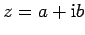

In Analogie zur Darstellung der reellen Zahlen auf der Zahlengeraden können die komplexen Zahlen als Punkte einer Ebene, der sogenannten GAUSSschen Zahlenebene, dargestellt werden: Eine Zahl  ist dann ein Punkt mit der Abszisse a und der Ordinate b.
Die reellen Zahlen liegen auf der Abszissenachse, die auch reelle Achse genannt wird, die imaginären auf der Ordinatenachse, der imaginären Achse. In der so vorgegebenen Ebene ist jeder Punkt durch einen Radiusvektor eindeutig bestimmt, so daß jeder komplexen Zahl ein bestimmter Vektor entspricht, der in dieser Ebene liegt und vom Koordinatenursprung zu dem betreffenden Punkt führt.
Die komplexen Zahlen können also sowohl durch Punkte als auch durch Vektoren dargestellt werden.